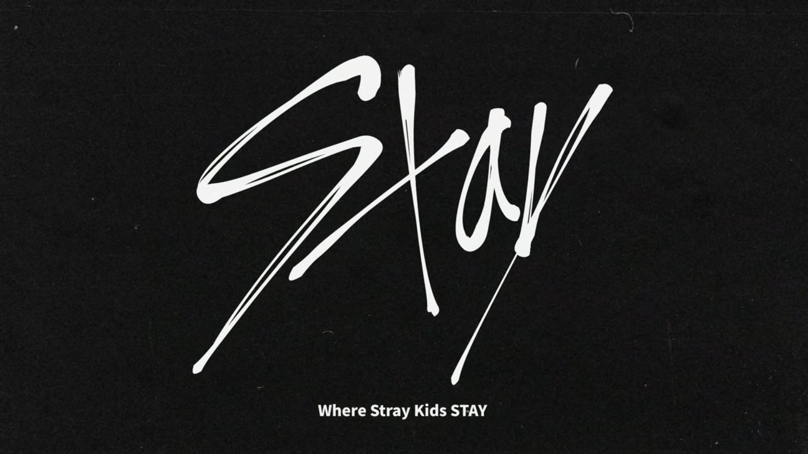

Being a new Stay is difficult when you don't know much about them.
It's hard to keep up with what other fans are talking about, or how most
of them looks identical to other members, and so on.
Do Not! worry this blog is for YOU. In this journal, we will discuss
ALL IN all about Stray Kids related topics, and contents, that would help you get
a background, as to WHO? they are. And of course, we will take it at my pace.
Hey, you wanna come in?
What is StrayKids?

-Stray Kids (스트레이 키즈) is a South Korean boy group under JYP Entertainment.
-The group were originally consists of 9 members:
Woojin, Bang Chan, Lee Know, Changbin, Hyunjin, Han, Felix, Seungmin, and I.N.
-They were formed from a survival program with the same name, Stray Kids.
-They debuted on March 25, 2018. (0325)
-Woojin left the group on 27th October 2019.
What is Stay?

-Stay (스테이) is the official fandom name for the group.
-"Stray" becomes "Stay" when you take out the "r."
-And the letter "R" is included for a reason,
meaning that their fans(us Stays) are their reason on why they stay.
Member Profiles
Bang Chan

Stage Name: Bang Chan (방찬)
Birth Name: Christopher Bang
Korean Name: Bang Chan (방찬)
Position: Leader, Main Producer, Lead Vocalist, Lead Dancer, Sub Rapper
Birthday: October 3, 1997
Zodiac Sign: Libra
Height: 171 cm (5’7’’)
Blood Type: O
MBTI Type: ENFJ-T
Unit: 3RACHA
Facts about Bang Chan:
– Chan said he moved to Sydney, Australia when he was very young. (His birthplace is South Korea)
– He has two siblings: one younger sister, named Hannah and one younger brother, called Lucas.
– Seungmin and Chan went to the same high school, and Chan was his senior.
– Chan used to take ballet and modern dance classes.
– His nicknames (according to his members) are Kangaroo and Koala.
– He wanted to become a singer because he liked to make people have a good time since he was a kid.
– He joined JYP Entertainment in 2010 after passing an audition in Australia.
– He trained for seven (7) years.
– He is in pre-debut group 3RACHA with Changbin and Jisung.
– He thinks his charming point is his dimples when he smiles.
– Chan’s hair is naturally wavy/curly.
– He speaks English, Korean, Japanese and a bit of Chinese.
– He helps with producing songs.
– According to Changbin, Chan is the busiest member of Stray Kids. He does the music editing and matches the choreography.
– Chan has a King Charles Spaniel dog named Berry.
– He used to train with GOT7, TWICE, and DAY6.
– Chan sees himself as an independent person who does things alone.
– He starred in TWICE‘s “Like Ooh Ahh” MV as a zombie and Miss A‘s “Only You” MV.
– His motto: “Just enjoy~.”
– If Chan got eliminated in Stray Kids, he would be a kangaroo, actor, or athlete.
– His role models are Drake, Cristiano Ronaldo, and his father.
More Bang Chan Facts...
Lee Know

Stage Name: Lee Know (리노) – formerly known as Minho
Birth Name: Lee Min Ho (이민호)
Position: Main Dancer, Sub Vocalist, Sub Rapper
Birthday: October 25, 1998
Zodiac Sign: Scorpio
Height: 172 cm (5’8″)
Blood Type: O
MBTI Type: ESFJ-T
Unit: Dance Racha
Facts about Lee Know:
– He was born in Gimpo, South Korea.
– He is an only child.
– He started dancing since he was in middle school.
– He was a backup dancer for BTS during their Japan tour.
– Lee Know was a backup dancer of BTS.
– Minho appeared in “Nat Geo” a few years ago when he was auditioning for Cube Entertainment.
– He was a trainee for one (1) year.
– Lee Know is said to have a unique and fun personality. A 4D personality.
– Bang Chan said that Lee Know would say random words with no meaning at random times.
– He can speak basic English and basic Japanese.
– He described himself as a “cute person who eats well”.
– Minho has a fear of heights
– His frequent habit is cracking his fingers.
– His hobbies are hiking, choreographing, and watching movies.
– He also likes watching anime.
– His favourite dance genre is hip-hop.
– He prefers to stay home and watch movies, or go to movies by himself.
– He puts his clothes in bundles ever since he was young. He learned it from his parents.
– Minho has three cats: Soon-ie, Doong-ie, Dori.
– He likes to refer to himself in the third person and is a great cook.
– Lee Know said that when he dances, he doesn’t want to look at the mirror because it distracts him.
– He wanted to become a singer. Because when he was a backup dancer, he realized that he wanted to be the star on stage.
– If he isn't in Stray Kids, he would be a dancer.
– When he was in elementary school, Minho wanted to be a policeman.
– Minho has very often told that he has SM type visuals (flower boy) rather than JYP type visuals.
– He got eliminated on November 7, episode 4 of Mnet’s Stray Kids but he was added back at the end of episode 9.
– His motto: “Let’s eat well, and live well.”
– His role model is 2PM‘s Taecyeon.
– Minho made the choreography for “Hellevator”.
- His english name is Rhino.
More Lee Know Facts...
Changbin

Stage Name: Changbin (창빈)
Birth Name: Seo Chang Bin (서창빈)
Position: Main Rapper, Sub Vocalist, Producer
Birthday: August 11, 1999
Zodiac Sign: Leo
Height: 167 cm (5’6″)
Blood Type: O
MBTI Type: ENFP-T
Unit: 3RACHA
Facts about Seo Changbin:
– He was born in Yongin, South Korea.
– He has an older sister.
– His nicknames: Mogi (mosquito), Jingjingie (whiny), Teokjaengie (chin), and Binnie.
– He trained for two (2) years.
– He is in pre-debut group 3RACHA with Chan and Jisung.
– His stage name in 3RACHA is SPEARB.
– He thinks his charming point is being cheerful and active.
– His specialities are writing lyrics and rapping.
– His hobbies are listening to music and shopping.
– He helps with producing songs.
– He likes dark things.
– Food that Changbin will eat without a doubt is french fries.
– He got featured on Show Me The Money 5 (but just for a few seconds).
– If he got eliminated in Stray Kids, he would be a producer, writer or maybe tattooist.
– He wanted to become a singer because when he danced and rapped at his school’s festival, the audience’s reaction was unforgettable.
– Changbin’s parents always wanted him to study abroad, but Changbin never wanted to leave his parents.
– His motto: “Let’s live with a positive mind, enjoy the life.”
– His role model is BIGBANG‘s G-Dragon, Kenrick Lamar, as well as his mother and father.
– Changbin had featured in former member Wanna One‘s Yoon Jisung song for his solo debut album for the song ‘You… Like The Wind’.
- His english name is Lewis.
More Changbin Facts...
Hyunjin

Stage Name: Hyunjin (현진)
Birth Name: Hwang Hyun Jin (황현진)
Position: Main Dancer, Lead Rapper, Sub Vocalist, Visual
Birthday: March 20, 2000
Zodiac Sign: Pisces
Height: 179 cm (5’10.5″)
Blood Type: B
MBTI Type: INFP-T
Unit: Dance Racha
Facts about Hwang Hyunjin:
– He was born in Seoul, South Korea.
– He is an only child.
– When he was a kid, he lived for a while in Las Vegas. (he went to kindergarten in Las Vegas for a short amount of time when he was 6-7 years old).
– When he lived in Las Vegas, he used the name, Sam.
– His nicknames are Jinnie and “The Prince”.
– He trained for two (2) years.
– He can speak basic English.
– He thinks his charming point is his lips.
– Hyunjin has a beauty spot/mark under his left unlid.
– He has a dog named Kkami, which he raises since he was 16.
– Hyunjin is allergic to cat fur.
– His hobbies are dancing, reading books and playing sports.
– He was curious as a child, so he participated in many competitions.
– He wanted to become a singer because being on stage made him very happy, and music is very appealing to him.
– Hyunjin helps I.N a lot. About ten (10) times a day.
– If he got eliminated in Stray Kids, he would be an interior designer.
– He talks in his sleep.
– Hyunjin is the hardest to wake up.
– Hyunjin’s friends and classmates call him the “Prince” because of his handsome looks and talent.
– I.N said Hyunjin cries the most out of all members.
– The one Hyunjin talks to the most on the phone is I.N.
– Hyunjin has a bracelet that supports abandoned cats and dogs.
– His motto: “Let’s try even when you regret it later.”
– His role model is GOT7‘s Jinyoung.
More Hyunjin Facts...
Han

Stage Name: Han (한)
Birth Name: Han Ji Sung (한지성)
English Name: Peter Han
Position: Main Rapper, Lead Vocalist, Producer
Birthday: September 14, 2000
Zodiac Sign: Virgo
Height: 169 cm (5’7″)
Blood Type: B
MBTI Type: ISTP-T
Unit: 3RACHA
Facts about Han Jisung:
– He was born in Incheon, South Korea.
– He used to live and study in Malaysia.
– He has one older brother.
– According to the members his nickname is Squirrel.
– He speaks English.
– He helps with producing songs.
– He is in pre-debut group 3RACHA with Chan and Changbin.
– His stage name in 3RACHA is J.ONE.
– He trained for three (3) years.
– Han is good at drawing characters.
– He thinks his charming point is acting silly.
– He prefers the lyrical and melodic type of rap.
– He can play the guitar.
– Han has trypophobia. (the fear of clusters of small holes)
– Han used to have an Instagram account that now is inactive: @wltjd914
– He said that he’s confident in is his irises because they’re large and pretty.
– He frequently sleeps whenever he lays down.
– Han spends most of his time in his bed in the dorms.
– He orders a lot of stuff online.
– He wanted to become a singer because he thought that telling your story through music was very cool.
– If he got eliminated in Stray Kids, he would be a producer.
– Han appeared in “King of Masked Singer” as “Imgeokjjeong”, he got eliminated in 1st round.
– His role model is Block B‘s Zico.
– His motto: “This too, shall pass.”
More Han Facts...
Felix

Stage Name: Felix (필릭스)
Birth Name: Felix Lee (이 필릭스)
Korean Name: Lee Yong Bok (이용복)
Position: Lead Dancer, Lead Rapper, Sub Vocalist
Birthday: September 15, 2000
Zodiac Sign: Virgo
Height: 171 cm (5’7″) – Felix said it himself, according to a fansign fan account.
Blood Type: AB
MBTI Type: ENFP-T
Unit: Dance Racha
Facts about Lee Felix:
– His parents are Korean, but he was born in Sydney, Australia.
– He has an older sister named Rachel/Jisue, and a younger sister named Olivia.
– His nicknames (according to his members): Bbijikseu, Bbajikseu, Bbujikseu, and Jikseu.
– He trained for one (1) year.
– He speaks English.
– He thinks his charming point is his freckles.
– Felix is very
– Felix is a 3rd-degree black belt at taekwondo. He won a lot of medals when he was young.
– He also loves swimming. He got the 2nd place for 15 age category in 2015 Swimming Carnival
– His hobbies are listening to music, dancing, shopping (especially clothes), travelling, and beatboxing.
– He can’t eat super spicy food.
– He can imitate the mosquito sound.
– He thinks that learning Korean is hard but enjoys learning it.
– He likes talking over the phone rather than texting.
– A host asked Felix if he has abs, and he answered: “Yes, I have abs”.
– He wanted to become a singer because he enjoys music.
– Staff said Felix hates being called by his Korean name Yongbok.
– Felix’s hands are tiny.
– Felix checks his pulse when he’s nervous.
– Felix likes to listen to Kenrick Lamar, Logic, and Joey BadA$$.
– His role model is BIGBANG‘s G-Dragon.
– He got eliminated on December 5, episode 8 of Mnet’s Stray Kids, but he was added back at the end of episode 9.
– If he got eliminated in Stray Kids, he would be a songwriter.
– His motto: “Just a little braver~.”
– Felix is ranked 43rd on TC Candler “The 100 Most Handsome Faces of 2018”.
More Felix Facts...
Seungmin

Stage Name: Seungmin (승민)
Birth Name: Kim Seung Min (김승민)
Position: Main Vocalist
Birthday: September 22, 2000
Zodiac Sign: Virgo
Height: 178 cm (5’10″)
Weight: 56 kg (123 lbs)
Blood Type: A
MBTI Type: ESFJ-A
Unit: Vocal Racha
Facts about Kim Seungmin:
– He was born in Seoul, South Korea.
– Seungmin has an older sister.
– His nickname (according to his members): Snail; his nickname (given by fans): Sunshine.
– He speaks English very well, though he only learned English in LA for three (3) months when he was in the 4th grade.
– Seungmin and Chan went to the same high school, and Chan was his senior.
– He joined JYP in 2017 after winning second place in JYPE’s 13th Open Audition.
– Unlike other trainees, Seungmin never missed a day writing his training logs.
– He thinks his most charming point is his chubby left cheek.
– His hobbies are writing in his diary, listening to music, and eating.
– Among all the members, he is the most teased.
– Seungmin loves oranges and strawberries.
– Seungmin can’t eat spicy food well, and he’ll start sweating a lot.
– His role models are DAY6, Kim Dong-ryul, and Sandeul from B1A4.
– He said he has many look-a-likes, like Day6’s Wonpil and actors Lee Jangwoo and Park Bogum.
– Seungmin wants to get close to GOT7’s Jinyoung.
– Apparently in 2013, a helicopter crashed into Seungmin’s apartment in Gangnam, while he was brushing his teeth.
– Seungmin likes to listen to Shawn Mendes.
– He wanted to become a singer because he liked being on stage and wanted to show his singing image.
– If he got eliminated in Stray Kids, he would be a photographer or a prosecutor.
– His motto: “Today you spent in vain is the day as tomorrow someone who passed away wants to live through.”
- His english name is Sky.
More Seungmin Facts...
Jeongin

Stage Name: I.N (아이엔)
Birth Name: Yang Jeong In (양정인)
Position: Sub Vocalist, Maknae
Birthday: February 8, 2001
Zodiac Sign: Aquarius
Height: 172 cm (5’8″)
Blood Type: A
MBTI Type: ESFJ-T
Unit: Vocal Racha
Facts about Yang Jeongin:
– He was born in Busan, South Korea.
– He has an older brother and a younger brother.
– I.N. use to be a child model when he was seven.
– He trained for two (2) years.
– His nicknames (according to his members): Desert Fox, Our Maknae, Spoon Worm Yang, and Bean Worm.
– He thinks his most charming point is his braces.
– He has had his braces for over two (2) years.
– I.N had his braces removed on January 17th 2019.
– His hobbies are listening to rock and pop songs and watching mukbang.
– He thinks that when he doesn’t smile, he looks scary.
– I.N’s middle school friends told him that they couldn’t talk to him because he looks scary when he doesn’t smile. So he smiles more now ever since.
– I.N still needs a lot of help from the hyungs, as stated by Hyunjin.
– He tends to be clumsy, so a lot of people tend to help him.
– Jeongin likes watching mukbang (eating shows).
– Likes to listen to Charlie Puth a lot
– He also likes listening to ASMR.
– His role model is Bruno Mars.
– He wanted to become a singer after elders asked him to sing trot in front of them. From then on, he liked to be on stage.
– If he got eliminated in Stray Kids, he would be a singer or an elementary school teacher since he likes kids.
– I.N made a cameo in the Web drama “A-Teen Season 2” ep 16 (2019) alongside Hyunjin.
– His motto: “Let’s have a good time!”
- His english name is Bob.
More Jeongin Facts...
Former Member
Woojin

Stage Name: Woojin (우진)
Birth Name: Kim Woo Jin (김우진)
Birthday: April 8, 1997
Zodiac Sign: Aries
Height: 176 cm (5’9″)
Blood Type: B
Facts about Kim Woojin:
– He was born in Daejeon, South Korea.
– He has one older brother.
– His nickname (according to his members): Bear.
– His speciality is kendo (modern Japanese martial arts).
– He is a former Fantagio trainee.
– He is a former SM trainee and used to train with NCT members.
– He thinks his charming point is his face when he laughs.
– He trained for two (2) years.
– Woojin continuously worked out to fulfil his role well when he was a trainee.
– He can speak basic English.
– He can play the guitar well.
– His hobbies are listening to music and shopping (especially clothes).
– He likes playing games.
– He can’t eat Tom Yum Kkung.
– Woojin's hands are the biggest among other members.
– If he has a time machine, Woojin would like to go back to his ten years old days.
– He wanted to become a singer because he liked singing since he was young.
– If he got eliminated in Stray Kids, he would be a vocal trainer or a music teacher.
– His motto: “Let’s not make things that we regret.”
– His role model is Bruno Mars.
– He left STRAY KIDS on October 27th, 2019 due to personal reasons and has terminated his contracts with JYP.
- His english name is Jacob.
More Woojin Facts...
| E = Extroverted | I = Introverted |
|---|---|
| N = Intuitive | S = Observant |
| T = Thinking | F = Feeling |
| P = Perceiving | J = Judging |
Now that you seem familiar with their information and personalities...or so you thought.
We will now go ahead with my most favourite part and believe me.
You will love it too :D
Drum roll, please...
Learning about their crackheaded side! yayy! :DD
Chan - GENIUS BANG

Lee Know - LEEKNOW IS CUTE

Changbin - DWAEKKI

Hyunjin - HYUN.E

Han - QUOKKA

Felix - HAENGBOK

Seungmin - SEUNGMO


"How To Be 행복해", better known as "The Felix Game".
It is programmed by STAY Happy Productions.
It is a video game about Stray Kids.
Made by STAY, for STAY.
About their game:
The Felix Game is a choice based game that focuses on a collecting mechanic.
In the game, the player plays the role of Lee Felix,
who gradually discovers more about Stray Kids and its members
by making the right (or wrong) choices.
They made this game as a gift for Felix, Stray Kids and STAY.
Join their Discord Server!
or
Check their Website!